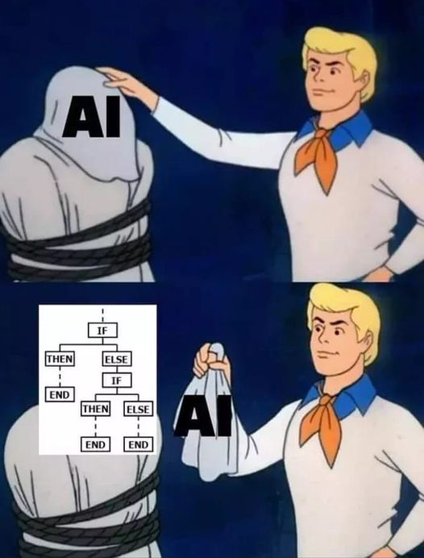

A self driving car can detect the motion of vehicles and other obstacles around the road and gets driven on its own. The car doesn't have senses like us. So, how does it do it? This is Artificial Intelligence. Artificial Intelligence, in short called AI, is the intelligence of machines created by human. It is a technology that enables machines to think and work like human.
AI is a component of machine learning. It is important to note that although all machine learning is AI, not all AI is machine learning. AI requires specialized hardware and software and algorithms. Generelly, AI system works by consuming data, analyzing it and give output. These systems are trained to analyze the datas. Programmers would define AI as a set of algorithms. So, when the machine is fed with data, it goes through the programmed algorithm and gives the output. This means the development of AI is basically the idea of finding out the better algorithms to program the machine. Hardware plays an important role in AI as well. Development of hardware is also significant in development of AI. The idea of humanoid robot may be that when the hardware system recognizes the surrounding, i.e voice or motion, the robot may be programmed and trained to analyze that sense and give the necessary output.
Like human initelligence, the artificial intelligence also has a set of skills that help to develop it.
AI is applcable in many technological areas. This includes search engines, content recommendation system in social media, virtual assistants like Siri and Alexa, language translator, speech recognition, face recognition, automatic vehicles, image labelling and many others.
AI is being popular in movies. CGI has developed with now AI being helpful in motion tracking, face recognition and so many more features. This means we can shoot an entire movie in a single hall, varying backgrounds and objects being shown on the screen. The faces of actors can also be modified and this is a huge step to modern film industries. A movie can be filmed by using a person whose face can be changed into that of an actor. So, the actor, without having to do any work, got the face in the movie. This also means that the people who have died can be shown on the screen again.
Gaming applications have also been using AI. In 1997, Deep Blue, a computer chess game program defeated Garry Kasparov, the best chess player back then. Nowadays, every video game is AI-based. AI can easily build a character in the game which is controlled like a human. Example, in war games, not every players we see are simulated by people playing the game. Some of them, which people refer as 'bots' are AI characters.
One of the interesting subjects in the field of Artificial Intelligence humanoid robots. People have developed many humanoid robots and are working to improve them. We have started to see these human-like robots in factories, restaurants and hospitals. These robots in fes years time will be like a new species, which may be more intelligent than human. They can be used to do works which human cannot do. Being a machine, they are dillegent, versatile and more accurate than human so they will perform many works better than us. We can use them in militaries to experiment with weapons and hospitals to accurately measure data and do complex tasks.
There are major concerns regarding the future of Artificial Intelligence. The positive aspects are huge. The development of AI will benefit in the advancement of technology. It will potentially revolutionize industries, research area and our daily lifestyle. It will also assist in medical discoveries. The development of AI has direct relationship with various scientific fields. The dependency of AI in our daily lives is likely to be increasing as well. The vast scope of AI will benefit infinite areas of humanity. But the ethical subject is the thing that determines the path of AI to the future. AI is promising prospect to solve the years of difficulties that the mankind have faced there also arises the responsibilty of handling this technology. AI aren't properly trained and tested. So we cannot guarantee anything from them. The development of AI will require feeding them with different informations, datas and whatsoever. This means a machine will store every informations, whether it is political, financial or a national issue. This also means whent the machine is accessed by someone else, the privacy is destroyed, the nation's secret agenda is made public. The nation's finance is disrupted. When we start to become more and more dependent on machines, the problems will rise. The cybersecurity might not be able to handle these problems. It is certainly possible to lead AI to build a luxurious future but it is very difficult that even a small unnotoceable error can lead to huge problem and we cannot trust the hands that are building it.
Job displacement might be a noticeable problem we can expect from AI. Machines, being more efficient and versatile, can replace human at different jobs. Also, due to the technology in movies and music, the original artists might get replaced as well. We can create a graphics, presentation or a music by AI. Moreover, we can make a new music with the voice of an artist, without actually including the real artist in the process. This is a feature even YouTube is working on. We can build computer programs by AI. In the future we might be able to make an application by AI which will be better than that built by human. There are many what ifs and many predictions. This will all depend on how we drive the AI technology and how we maintain it in the future.